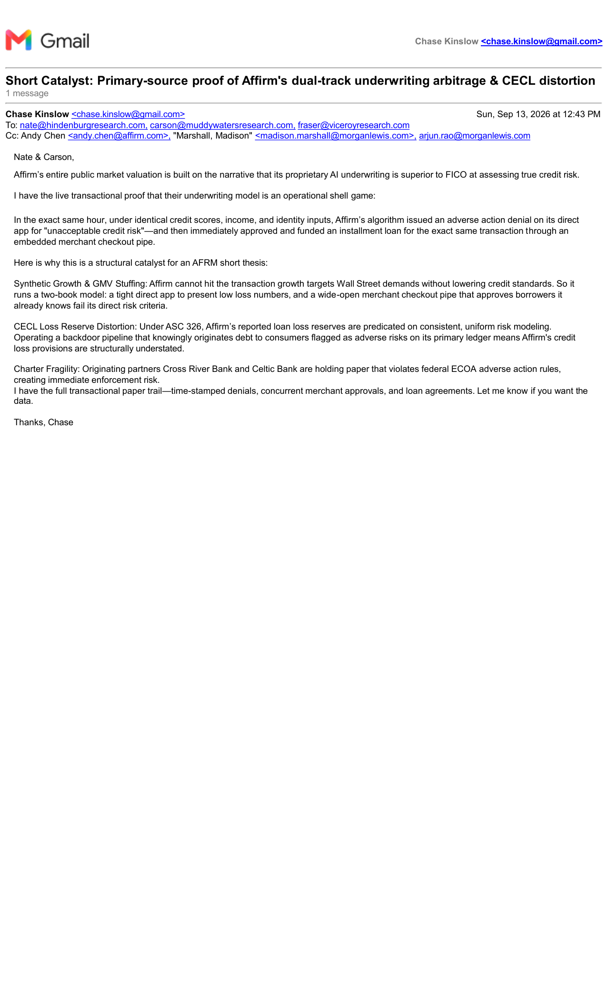

The Two-Book Machine: Inside Affirm’s Dual-Track Underwriting Arbitrage
By Charles W. Kinslow IV, J.D., C.P.A. • Published: September 13, 2026 • Certified Case Record #260717-35668593
“Buy Now, Pay Later platforms have spent years telling Wall Street their proprietary machine-learning algorithms are smarter than FICO.
In reality, they run a two-book underwriting arbitrage:
Book One (The Clean Balance Sheet): On their direct app, where they hold the risk, their algorithm aggressively rejects borrowers to keep reported default metrics suppressed.
Book Two (The Checkout Arbitrage): At partner checkout counters (like Shop Pay on Shopify), they drop their standards, approving the exact same borrower minutes later under identical credit data just to satisfy merchant volume commitments.
This isn't smarter credit risk management. It's an automated volume machine that distorts CECL loan-loss reserves, compromises warehouse credit facilities, and uses third-party bank charters to run arbitrary adverse action.”
— Charles W. Kinslow IV, J.D., C.P.A.
1. Formal Evidentiary Disclosures Delivered
This operational discrepancy is not theoretical. Formal evidentiary notices documenting this live, contemporaneous transactional discrepancy have been delivered directly to:
- Big Four National Audit Leadership: Deloitte & Touche LLP, Ernst & Young (EY), PricewaterhouseCoopers (PwC).
- Originating Bank General Counsel: Cross River Bank, Celtic Bank.
- Credit Facility Syndicate Agents: Barclays, Morgan Stanley.
- Enterprise E-Commerce Partners: Shopify Legal & Compliance.
📊 Visual Evidence Deck: "Does Anyone Care?"
Slide 1 of 5
2. The Architecture: Direct App vs. Embedded Checkout
Affirm’s public market valuation is built on the narrative that its proprietary AI underwriting is superior to FICO at assessing true credit risk. The live transactional receipts show how the underwriting engine functions as an operational shell game:
Book One: Direct App (Adverse Action Denial)
Where Affirm carries balance-sheet exposure, the algorithm is crude, reactive, and quick to issue automated adverse action denials citing "unacceptable credit risk" to keep loss metrics suppressed for quarterly earnings calls.
Book Two: Checkout Arbitrage (Instant Approval)
At partner checkouts (Shop Pay on Shopify), Affirm overrides its own risk logic. In the exact same hour, under identical credit scores, income, and identity inputs, Affirm approves and funds an installment loan for the exact borrower it rejected on Book One.
3. The Contemporaneous Transactional Audit
| Metric / Parameter | Direct App Application (Book One) | Embedded Partner Checkout (Book Two) |
|---|---|---|
| Timestamp | Contemporaneous (Same Hour) | Contemporaneous (Same Hour) |
| Borrower Profile | Identical FICO, Income & Identity | Identical FICO, Income & Identity |
| Underwriting Determination | ADVERSE ACTION DENIAL | IMMEDIATELY APPROVED & FUNDED |
| Stated Risk Reason | "Unacceptable Credit Risk / Score Criteria" | Bypassed; Automated Approval Code Issued |
| Operational Purpose | Suppress Reported Delinquencies | Satisfy Merchant SLAs & GMV Stuffing |
4. Structural Catalysts for Capital Markets & Regulators
A. Synthetic Growth & GMV Stuffing
Affirm cannot hit the transaction growth targets Wall Street demands without lowering credit standards. Running a two-book model allows Affirm to present low loss numbers from its direct channel while maintaining a wide-open merchant checkout pipe that approves borrowers it already knows fail its direct risk criteria.
B. CECL Loss Reserve Distortion (ASC 326)
Under FASB Accounting Standards Codification ASC 326 (CECL), reported loan loss reserves are predicated on consistent, uniform risk modeling. Operating a backdoor pipeline that knowingly originates debt to consumers formally classified as adverse risks on its primary ledger means Affirm's credit loss provisions are structurally understated.
C. Charter Fragility & Originating Bank Exposure
Originating bank partners (Cross River Bank and Celtic Bank) are holding and selling paper that violates federal Equal Credit Opportunity Act (ECOA, 12 C.F.R. § 1002.9) adverse action rules. Issuing a formal adverse action denial to a consumer claiming they are an "unacceptable credit risk," while minutes later lending that exact same consumer money through a white-labeled merchant pipe, exposes the denial as an operational pretext.
D. Warehouse Facility Covenant Breaches & ABS Repurchase Triggers
In SEC-registered ABS prospectuses and revolving bank warehouse facilities (Morgan Stanley, Barclays, Goldman Sachs), originators explicitly warrant that all pledged receivables represent Eligible Loans originated in strict accordance with stated underwriting standards. Pledging receivables originated through an underwriting bypass creates immediate covenant breach exposure and mandatory loan repurchase obligations.
Conclusion: The Reality Behind the Clickwrap
Nothing in this article is hypothetical. Contemporaneous transaction receipts, time-stamped denials, and concurrent merchant approvals are preserved in certified regulatory dockets. Consumers, retail partners, and debt facility syndicates deserve to see the actual operational machinery running behind the marketing narrative.
5. Primary Evidentiary Dossiers & Interactive Tools
- Interactive Risk Tool: Affirm Underwriting Risk & 120-Day Charge-Off Calculator
- Capital Stack Analysis: Affirm Capital Stack & ABS Warehouse Facility Covenants
- Short-Seller Forensic Thesis: The 120-Day Charge-Off Delay & ABS Covenant Vulnerabilities
- Certified CFPB Case Docket: CFPB Complaint #260717-35668593 Evidentiary File (PDF)